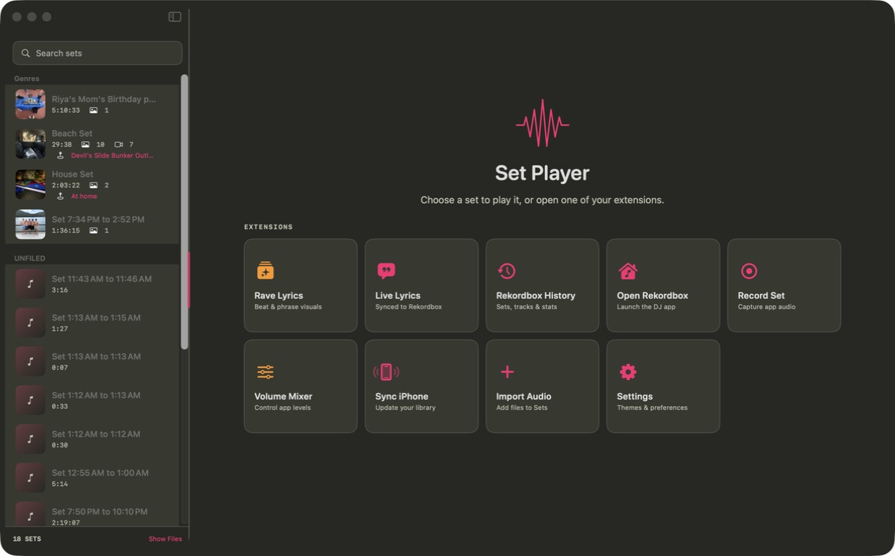

Recorded audio
Import a mix or capture application audio directly on macOS.
SET.M4A · 29:38Native macOS + iPhone app
Set Player connects the recording to everything that made it matter—Rekordbox history, the exact tracklist, the waveform, the photos, and the place.

Built around the tools you already use
Rekordbox integration
Set Player reads your local Rekordbox played-track history and turns it into context you can use: sessions, statistics, track metadata, and a timed setlist attached to the recording.
Browse every sessionSearch sets, tracks, artists, sources, and historical paths.
Match recording to historyChoose the played session that belongs to a recorded set.
Build the timelinePreserve track order, start time, length, artwork, key, and BPM.
Power the experienceTimed tracks drive Now/Next context and Rekordbox-synced lyrics.

From history to memory
Import a mix or capture application audio directly on macOS.
SET.M4A · 29:38Find the matching performance inside your played-track history.
15 PLAYED TRACKSSet Player aligns each track to its position in the recording.
START · LENGTH · NOW/NEXTPlay it back with waveform, track context, media, and location.
ONE COMPLETE MEMORYReal product surfaces
No conceptual mockups. Switch between screens captured directly from the installed macOS application.
Beyond playback
The extensions visible in the actual app are part of one continuous workflow.
Follow the track currently playing in Rekordbox with synced lyrics, or open beat- and phrase-reactive visuals with curated presets.
Capture application audio into a new recording and control per-application levels from inside Set Player.
Keep the visual memory, description, date, artwork, and interactive map location attached to the recording.
Search and curate on desktop, then sync the same set library to the native iPhone companion.

Set Player 1.0
Download the native Apple silicon build or explore the complete source.
Ad-hoc signed preview · iPhone target available from source